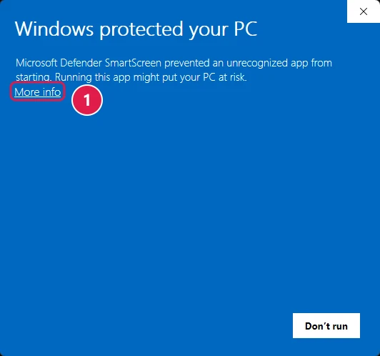
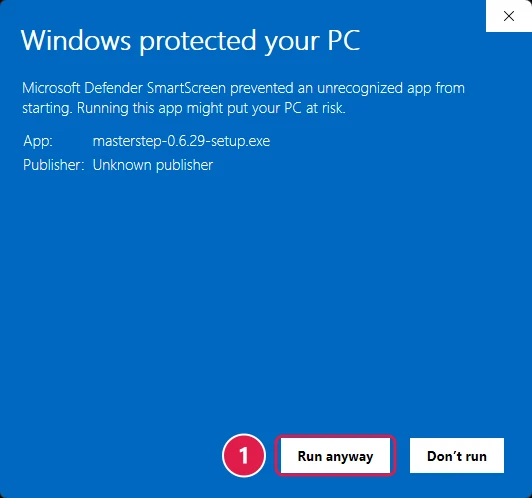

Installing MasterStep
A short guide to installing and opening the app the first time.
The beta isn't signed yet, so Windows or macOS shows a warning the first time you open it. That's expected, and you only do this once.
Your download link and license key are in your invite email.
Windows
Using Chrome or Firefox? Its download warning looks different. Choose to keep the file, open it, and continue from step 4.
If Edge says the file isn't commonly downloaded, point at the file, click the three dots and choose Keep.

In the window that opens, click the arrow next to Delete and choose Keep anyway.

Open the file. In Edge, click Open file.

If a blue Windows protected your PC window appears, click More info.

A Run anyway button appears. Click it.

The installer runs on its own, with no questions, and takes under a minute. When it's done, MasterStep opens.

No Run anyway button? Reply to your invite email and we'll help.
Mac
Open the DMG file and drag MasterStep into the Applications folder.
Open MasterStep from Applications. macOS says it can't verify the app. Click Done. Don't click Move to Trash.

From the Apple menu, choose System Settings…, then Privacy & Security. Scroll down, and under Security click Open Anyway.


In the window that opens, click Open Anyway again and type your Mac password. From now on MasterStep opens like any other app.

The Open Anyway button only stays there for about an hour after you try to open the app. Don't see it? Open MasterStep again, then go back to Settings.
macOS 14 or older
In Applications, right-click MasterStep (or Control-click it), choose Open, then click Open again.
The first time you open it
- MasterStep asks for your license key. Copy it from the email, paste it, and click Activate. You need an internet connection.
- Want to tell us something? In the app: Settings → About → Send feedback.